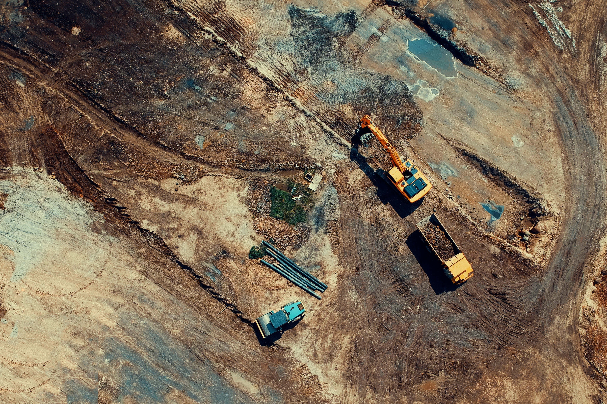
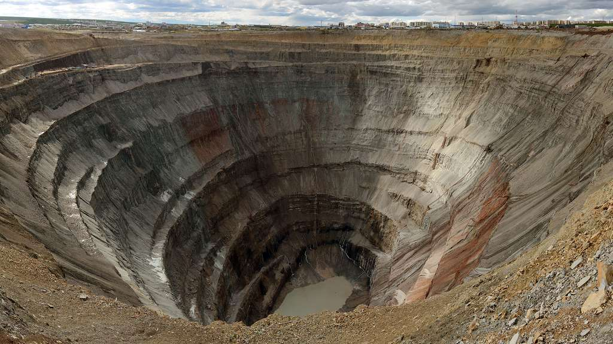
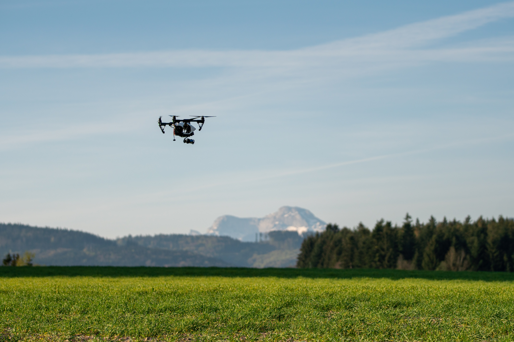

TANIO-GIS est une entreprise spécialisée dans les études d’ingénierie géomatique qui fournit divers solutions en drones dans plusieurs domaines. Parce qu’il est essentiel, pour la réussite et la pérennité de vos projets, que vous disposiez des meilleurs solutions géospatiales sur lesquels reposeront vos projets, nous nous engageons à réaliser nos prestations dans les règles de l’art. Nous maîtrisons l’ensemble de la chaîne de production de nos études, à savoir : la maîtrise du matériel, des données, des méthodes et des logiciels.
Nous transformons le monde réel de vos projets en un modèle numérique avec notre système d’information, ce qui permet de vous aider à prendre des décisions basées sur des données très précises..
L’utilisation des drones dans le domaine des bâtiments et travaux publiques permet de suivre, contrôler, visualiser et archiver l’évolution de vos projets d’une manière périodique quelque soit l’accécibilité à votre chantier.
Pour garantir la pérennité de vos projets minières ( gestion et exploitation) , nous vous assurons leur suivi et contrôle à travers nos solutions géospatiales.
L’Agriculture Numérique exige l’interdisciplinarité, en effet la fusion entre les sciences agricoles et les technologies permet d'optimiser la production et le suivi de l'état des parcelles d'une façon régulière.
